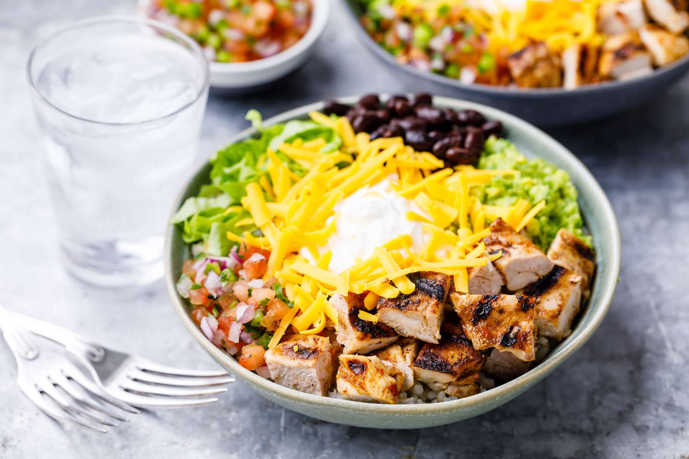

Homemade Chipotle Bowl

Description
This recipe takes the delicious homegrown ingredients from the popular fast-casual American based Mexican food chain and brings them back to the home for anyone to enjoy on a budget.
Skip the long lines, the unexpected food shortages and the unnecessarily high amount of sodium per serving and place the deliciousness of Chipotle in your own hands
Ingredients
- Rice
- Guacamole
- Corn Salsa
- Tomato Salsa
- Chicken
- Cheese
- Beans
Steps
- First make the marinade in a food processor by blending together the red onion, garlic, adobo sauce, ancho chili powder, olive oil, cumin, and oregano.
- When ready, cook the chicken in a skillit over medium-high heat, using a little olive oil. Sear the chicken on one side, then the other, until it registers and internal temperature of 165 degrees.
- For the rice, cook the basmati rice in a pot of water, using a 4:1 water to rice ration. Bring the water toa boil, then add the rice, a little salt and a bay leaf.
- Drain off the excess water, rince the rice with hot water in a fine-mesh sieve, and dump the rice in a bowl. Stir in the lemon and lime juices, and the chopped cilantro, then season with salt.
- For the corn salsa, frozeon corn works great here, so cook it using the package's instructions, then spread it out on a baking sheet to let it cool.
- Then toss it together with the chopped roasted poblano pepper, red onion, cilantro, lemon juice, lime juice, and chopped jalapeno peppers. Give it some salt too.
- For the tomato salsa, or pico de gallo, chop up raw tomatoes, jalapeno peppers, red oinion and cliantro. Then combine all the ingredients in a bowl with lemon joice, lime joice and salt.
- And for the Guacamole, plan for about 1/2 avocado for each person and scoop out the flesh of the avacados and mash it together with the lemon and lime juice.
- And lastly, stir in the chopped onion, cilantro, jalapeno and a pinch of salt.
For building the bowl:
- Set everything out and pretend you're at the Chipotle counter. Grab your biggest bowl!
- Start with the rice, then the beans, then the chicken. A little salsa, some corn, then a whole lotta guac. Don't worry, we won't charge extra!
- Add some cheese, lettuce and all that's left to do is grab a fork and enjoy all your (not so) hard work